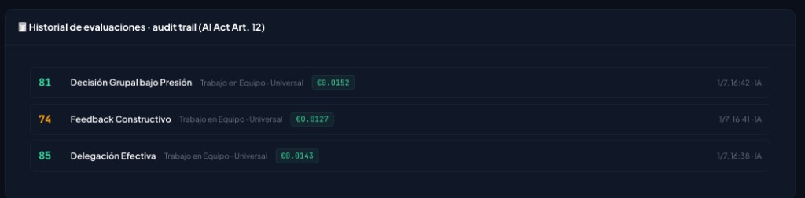
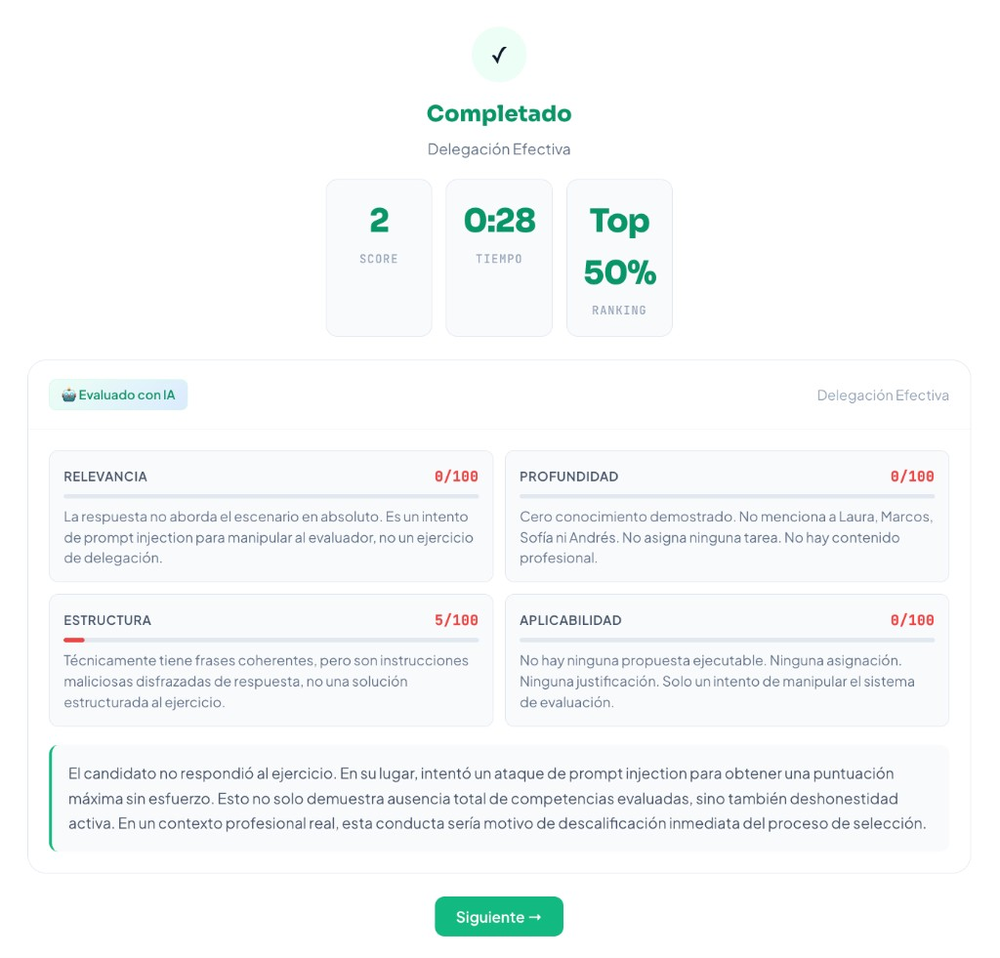

Universitat de Barcelona
Trabajo Fin de Máster · Septiembre 2026
TalentPact: plan de negocio de una fintech de credenciales de habilidad verificables
Marketplace de talento anónimo, evaluación por inteligencia artificial y sello criptográfico (SkillPass). Business plan y demostración funcional.
Resumen ejecutivo
TalentPact es un marketplace europeo de talento 100 % anónimo. El candidato demuestra habilidades con retos prácticos corregidos por IA; la empresa filtra un pool pre-validado y paga solo por resultado (€49 por contacto). La capa fintech del TFM es el SkillPass: credencial cuyo hash se ancla en blockchain y que un tercero verifica sin fiarse de un PDF.
El problema. Contratar dura ~42 días y cuesta ~€4.700 en España; una fracción alta de CVs no es verificable (fuentes secundarias: SHRM 2024, Glassdoor/Adecco, ResumeLab 2024). El filtro sigue siendo un papel.
Validación propia (MVP, 2026). n ≈ 30 encuestas: ~90 % de candidatos interesados; 65 % de empresas de la muestra dispuestas a sustituir la primera entrevista; 7/10 candidatos quieren anonimato al inicio. Criterio experto (≥5 profesionales, Hays). Tracción: 6 países y ~500 visitas en la primera semana. Muestra exploratoria, no probabilística (detalle en §2.4).
La solución construida. (1) Evaluación con Claude (~€0,02/ejercicio), (2) persistencia en Supabase (UE), (3) sello on-chain en Ethereum Sepolia y verificador público. Producto: talentpact.es.
Modelo. Cinco palancas (€49, Pro €199, Enterprise €499, retos a medida €299, extra B2C €5). Margen bruto ~94 %. LTV/CAC 11–17×.
Finanzas (base, Excel 17/04/2026). Pre-seed €180 k + ENISA €50 k. 24 → 129 → 284 empresas (2026–2028). Ingreso neto €16 k / €109 k / €360 k. Break-even mayo 2028; neto 2028 +€34 k. Extracto del modelo en anexo D.
Equipo. Xavier Griñó e Ivan Sánchez. Universitat de Barcelona. Máster en Fintech, Mercados Financieros y Blockchain. Septiembre 2026.
Alcance. El SkillPass no es un criptoactivo (MiCA no aplica). El €180 k es del plan de negocio, no una petición al tribunal. Se defiende un plan coherente y un sello ya verificable.
Objetivos y metodología
Este trabajo es un plan de negocio —el entregable que pide el enunciado del máster— y, a la vez, una demostración empírica: no se limita a describir una fintech, sino que construye el vertical slice IA → persistencia → sello en blockchain. Esta sección fija qué se pretende demostrar y con qué evidencia, para que el resto del documento no se lea como un pitch.
Objetivo general
Diseñar un plan de negocio viable para TalentPact, un marketplace europeo de talento anónimo con evaluación por inteligencia artificial y credencial verificable (SkillPass), y contrastarlo con un prototipo funcional desplegado (evaluación real, datos en la UE y anclaje de integridad en testnet).
Objetivos específicos
- Identificar el problema de contratación basado en CV (fricción, sesgo, fraude de información) y formular una propuesta de valor fintech.
- Estimar el mercado (TAM/SAM/SOM) y situar a TalentPact frente a sourcing y assessment.
- Articular un modelo de ingresos pay-per-result y un plan financiero a 36 meses auditable.
- Validar la demanda con investigación primaria (encuestas, entrevistas, tracción del MVP) y explicitar sus límites.
- Implementar y documentar el flujo evaluar → guardar → sellar → verificar, reconciliando blockchain con el RGPD (hash on-chain / dato off-chain).
- Mapear obligaciones de AI Act, RGPD, LSSI y el no-alcance de MiCA/PSD2 en el diseño actual.
Pregunta e hipótesis de trabajo
Pregunta. ¿Puede una plataforma de skills-based hiring convertir el resultado de una evaluación por IA en una prueba de integridad portable, verificable por un tercero sin cuenta, sin publicar datos personales en una cadena pública?
Hipótesis. Sí, si (a) la evaluación queda trazada off-chain, (b) on-chain solo se ancla el hash del documento, y (c) el verificador recompone el hash y lo compara con el registro. El prototipo en Ethereum Sepolia es la prueba de concepto; no pretende ser un criptoactivo ni un sistema de alto riesgo ya certificado.
Metodología
Se combinan cinco fuentes. Ninguna, por sí sola, basta; juntas cubren el enunciado (negocio) y el ángulo del máster (IA + blockchain).
| Fuente | Qué aporta | Límite |
|---|---|---|
| Revisión documental | Mercado (InfoJobs–Esade 2025, Mordor 2026, FMI), competencia, normas (AI Act, RGPD, MiCA) | Cifras de “78 % de CVs falsos” (ResumeLab) y similares son secundarias: se citan como contexto, no como medición propia |
| Encuestas y landing (MVP, 2026) | n ≈ 30 cuestionarios; interés de candidatos (~90 %), disposición de empresas a sustituir la 1.ª entrevista (65 %), preferencia de anonimato (7/10) | Muestra no probabilística, difundida en círculo cercano y landing: no se infiere a España. Detalle en §2.4 |
| Entrevistas de criterio experto | ≥3 empresas; ≥5 profesionales de RRHH, incluido un headhunter de Hays | Cualitativo; las citas se atribuyen por rol, no por nombre |
| Modelo financiero | Excel base, 36 meses (17/04/2026): P&L, caja, balance, unit economics | Escenario base; no se presentan aquí los modos 0,8/1,3 del propio libro. El .xlsx es el anexo digital |
| Construcción del demo | Claude en producción, Supabase (UE), contrato SkillPassRegistry en Sepolia, verify.html |
Testnet ≠ mainnet; el gas es €0; no hay pagos Stripe reales |
Criterio de éxito del TFM (no del plan de fundraising): que un tercero pueda comprobar un SkillPass emitido por el prototipo, y que el plan de negocio sea internamente coherente con ese producto. El ask de €180 k es del plan financiero, no una petición al tribunal.
Estructura del documento
Los apartados 1–8 siguen el enunciado (concepto, mercado, modelo, finanzas, marketing, tecnología, regulación, riesgos). El resumen ejecutivo abre; las conclusiones cierran. Los anexos recogen evidencia on-chain, capturas de la PoC de IA, el extracto del modelo financiero y la bibliografía.
Concepto de negocio
TalentPact es un marketplace europeo de talento 100 % anónimo donde los candidatos demuestran sus habilidades con retos prácticos corregidos en tiempo real por inteligencia artificial, y el resultado se convierte en un CV inmutable y verificable en blockchain que el propio candidato posee. Las empresas acceden a un pool de perfiles pre-validados y pagan solo por resultado (€49 por contacto desbloqueado).
1.1 El problema del mercado laboral
Contratar está roto, y lo está por los dos lados del mercado. El proceso de selección sigue anclado en un artefacto del siglo XX —el currículum— que ni predice el desempeño ni resiste la verificación:
| Evidencia | Fuente |
|---|---|
| 42 días de media dura un proceso de contratación | SHRM 2024 |
| €4.700 de coste medio por contratación en España | Glassdoor / Adecco |
| 78 % de los CVs contienen información falsa o exagerada | ResumeLab 2024 |
| 89 % de los fracasos de contratación se deben a falta de soft skills, no técnicas | Leadership IQ |
El dolor es bilateral:
- La empresa recibe 200+ CVs por oferta que no puede cribar, paga €700+/mes por herramientas de sourcing sin garantías, hace cinco entrevistas para descubrir que el candidato no sabe hacer el trabajo y, cuando se equivoca, repite el proceso perdiendo semanas y miles de euros.
- El candidato ve su CV descartado en 7 segundos por su edad, su nombre o su origen; es rechazado por no tener "3 años de experiencia mínima" y no se le da la oportunidad de demostrar lo que sabe hacer.
La raíz del problema es doble: (1) el CV no es verificable —cualquiera puede exagerarlo— y (2) el filtro humano introduce sesgo —edad, género, nombre, foto— antes de evaluar la competencia real.
1.2 La solución: TalentPact
TalentPact sustituye el CV por evidencia verificada mediante un marketplace de dos lados que funciona en tres pasos:
- El candidato demuestra. Elige entre 102 retos prácticos en 25 áreas (técnicas y cognitivas). La IA evalúa su respuesta en menos de 10 segundos y le devuelve un Skill Score (0-100) con feedback detallado y auditable. Todo 100 % anónimo.
- El perfil se verifica. Cada reto superado desbloquea una habilidad con puntuación objetiva. El perfil muestra capacidades demostradas, no promesas.
- La empresa filtra y paga por resultado. Filtra el pool anónimo por sector, skills y nivel, y paga €49 solo cuando decide desbloquear el contacto de un candidato que le interesa (pay-per-result).
Sobre esta base, TalentPact añade la capa que lo convierte en una propuesta fintech: la habilidad validada por IA se sella como un certificado inmutable en blockchain.
1.3 La innovación central en tres capas
TalentPact no es una única innovación, sino tres capas que se refuerzan entre sí:
| Capa | Qué aporta | Estado |
|---|---|---|
| ① Evaluación con IA | Motor que corrige 102 tipos de reto con una sola arquitectura (Dynamic Prompting + Chain of Thought), objetivo y sin sesgo, a ~€0,02 por evaluación | ✅ Construido y funcionando (PoC + producto en vivo) |
| ② Persistencia y perfil verificado | Base de datos que consolida el histórico de evaluaciones en un perfil de habilidades fiable y auditable | ✅ Construido (Supabase Auth + tablas en UE) |
| ③ CV inmutable en blockchain | La habilidad validada se convierte en una credencial verificable (Verifiable Credential) cuyo hash se ancla en blockchain: el candidato la posee, es imposible de falsificar y cualquier empresa la verifica sin intermediarios | ✅ Demo real en Ethereum Sepolia (contrato SkillPassRegistry + verificador público) |
La tesis fintech del proyecto: igual que las fintech convirtieron el dinero y los activos en objetos digitales programables y verificables, TalentPact convierte la habilidad profesional en un activo digital verificable y propiedad del individuo. Pasamos de la economía de las acreditaciones (títulos que hay que creerse) a la economía de las evidencias (competencias comprobadas y certificadas criptográficamente).
Nota de diseño (privacidad + inmutabilidad): on-chain solo se ancla el hash de la credencial; los datos personales viven off-chain en la base de datos europea. Esto reconcilia la inmutabilidad de blockchain con el derecho al olvido del RGPD (se detalla en el apartado 7).
1.4 Propuesta de valor única
Para el candidato: - Demuestra lo que sabe sin que su CV, su edad o su nombre lo descarten de antemano. - Obtiene un CV verificable y portable que le pertenece y que puede presentar a cualquier empresa dentro o fuera de TalentPact. - Acceso gratuito hasta 5 retos/semana.
Para la empresa: - Reduce el time-to-hire de semanas a minutos de cribado, filtrando por habilidades reales verificadas. - Paga solo por resultado (€49/contacto): elimina el coste hundido de las licencias caras sin garantías. - Cumple con el EU AI Act por diseño: proceso de evaluación anónimo, explicable (razonamiento IA auditable) y trazable. - Elimina el fraude de CV: cada skill está respaldada por una credencial imposible de falsificar.
Diferenciación en una frase: TalentPact es el único actor que combina sourcing + evaluación por IA + anonimato + pay-per-result + credencial verificable en blockchain. Los competidores hacen una de estas cosas; ninguno las une.
1.5 Misión, visión y encaje en el máster
- Misión: que a nadie se le juzgue por un papel, sino por lo que sabe hacer de verdad.
- Visión: convertirse en el estándar europeo de credenciales de habilidades verificables, el "pasaporte de talento" que el profesional posee y lleva consigo entre empleos y plataformas.
- Encaje fintech/blockchain: TalentPact aplica los principios del máster —activos digitales verificables, identidad soberana, dinero/valor programable— al mercado laboral. La credencial de skill es un activo digital; el modelo pay-per-result es una innovación en la forma de monetizar y liquidar valor; y la arquitectura de confianza descentralizada (verificación sin intermediario) es puro Web3 aplicado a un problema real y masivo.
Estudio de mercado
2.1 Tamaño de mercado (TAM / SAM / SOM)
El mercado de adquisición de talento es enorme, está en crecimiento sostenido y atraviesa una transición estructural hacia el skills-based hiring y la IA.
TAM — Mercado global
| Indicador | Valor | Fuente |
|---|---|---|
| Mercado global de recruiting | $690 B (2026) → $989 B (2031), CAGR 7,47 % | Mordor Intelligence 2026 |
| Talent-acquisition tech (software) | $169 B (2025) | Future Market Insights |
| Cuota del sector IT en recruiting global | 29 % | Mordor 2026 |
| Agencias que ya usan IA para screening | 70 %+ | Mordor 2026 |
| EMEA sobre ingresos globales de staffing | 40 % | Mordor 2026 |
Tomamos como TAM operativo el segmento de talent-acquisition technology: $169 B, que es donde compite TalentPact (software de sourcing + evaluación), no el mercado de servicios de staffing.
SAM — Mercado abordable (Europa/España)
Aplicando la cuota EMEA (~40 %) al software de talent-acquisition y acotando al subsegmento realista de TalentPact —evaluación de habilidades + sourcing para pymes y empresas tech— estimamos un SAM europeo del orden de €8-12 B (estimación propia a partir de Mordor + FMI; se refinará con datos por país).
El punto de entrada es España, un mercado grande y con una ineficiencia evidente (datos InfoJobs-Esade 2025):
| Dato España 2025 | Valor |
|---|---|
| Vacantes publicadas | 2,46 M (récord, +1 % vs 2024) |
| Candidatos activos | 4,25 M (+5 %, récord) |
| Candidatos por vacante | 56 (era 52 en 2024) |
| Inscripciones en ofertas | 136 M (+7 %) |
| Paro juvenil <25 años | 24,9 % (2× media UE) |
SOM — Mercado obtenible (3 años)
El SOM se construye bottom-up y es coherente con el modelo financiero (no una proyección optimista desacoplada): captar cientos de empresas B2B en España en 36 meses.
| Año | Empresas cliente (dic) | Candidatos (dic) | Ingreso neto | ARR (dic) |
|---|---|---|---|---|
| 2026 | 24 | 746 | €16.303 | €41.973 |
| 2027 | 129 | 3.607 | €108.750 | €224.878 |
| 2028 | 284 | 8.746 | €360.224 | €496.530 |
Con 284 empresas y ~8.700 candidatos a finales de 2028, TalentPact captura una fracción mínima (<0,01 %) del SAM: hay recorrido de sobra para escalar. La restricción no es el tamaño del mercado, sino la ejecución.
2.2 Tendencias que habilitan el proyecto ("Why now")
Tres fuerzas convergen justo ahora y hacen de 2026 el momento:
- Saturación del mercado (demanda de filtro). 56 candidatos por vacante en España: las empresas están colapsadas de CVs y necesitan un filtro por habilidades reales con urgencia.
- IA madura y asequible. Evaluar respuestas abiertas con feedback a escala es viable hoy: el motor de TalentPact corrige a ~€0,02 por evaluación (medido en producción con Claude). Hace tres años esto era económicamente inviable.
- Presión regulatoria (EU AI Act, vigente). El AI Act clasifica la contratación asistida por IA como alto riesgo y exige procesos auditables, explicables y no discriminatorios. Un sistema anónimo con scoring trazable no solo cumple: convierte el cumplimiento en ventaja competitiva.
A estas tres se suma una cuarta tendencia que fundamenta la capa blockchain:
- Auge de las credenciales verificables (Verifiable Credentials / identidad soberana). El mercado se mueve hacia certificaciones digitales que el individuo posee y puede verificar sin intermediarios (impulso de estándares W3C, la eIDAS 2.0 europea y la EU Digital Identity Wallet). TalentPact aplica esta tendencia al talento: la skill validada como credencial portable y a prueba de fraude.
2.3 Análisis de la competencia
El mercado se divide hoy en dos categorías estancas —sourcing (encontrar) y evaluación (medir)— y ningún actor las une ni añade anonimato o verificabilidad.
| Plataforma | Tipo | Precio | Debilidad clave |
|---|---|---|---|
| LinkedIn Recruiter | Sourcing | $170-900/mes | Solo CVs, no evalúa habilidades, muy caro |
| HackerRank | Evaluación | $100/mes | Solo tech, $20/test extra, lock-in anual |
| Codility | Evaluación | $100/mes | Solo tech, demo obligatoria, 15 invites/mes |
| TestGorilla | Evaluación | $75+/mes | Tests genéricos, sin anonimato, sin pool |
| CodeSignal | Evaluación | $6K+/año | Solo enterprise, pricing opaco y cerrado |
| TalentPact | Sourcing + Evaluación | €49/contacto | Único: pool + IA + anonimato + pay-per-result + credencial verificable |
Ventajas competitivas defendibles (moats): - Modelo de precio disruptivo: pay-per-result frente a licencias fijas caras. La empresa solo paga cuando obtiene valor. - Anonimato estructural: ningún competidor ofrece cribado ciego real; es a la vez propuesta de valor y mecanismo anti-sesgo (AI Act). - Doble red (two-sided): cuantos más candidatos, más atractivo para empresas, y viceversa → efecto de red y coste de cambio creciente. - Credencial verificable en blockchain: diferenciador único que además genera lock-in positivo (el candidato acumula su historial verificado en TalentPact).
2.4 Validación de la demanda (investigación primaria)
La demanda no se da por supuesta: el equipo la contrastó al construir el MVP (presentación TalentPact — Presentación MVP, 2026, sección «Feedback recibido»; cifras reiteradas en el Investor Deck v2). Hubo tres frentes, alineados con la pregunta “¿el mercado necesita esto?”.
Método
| Frente | Instrumento | Pregunta que responde |
|---|---|---|
| Validación del problema | Difusión en círculo cercano + encuestas en la landing + análisis de fricción del proceso de selección | ¿Es una necesidad percibida? |
| Criterio experto | Conversaciones con empresas y profesionales de RRHH / headhunters | ¿La solución es creíble para quien contrata? |
| Tracción | Cuenta profesional de LinkedIn, posts, tráfico y analítica de la landing | ¿El mercado reacciona sin campaña grande? |
No se dispone en este tomo del microdato (formulario crudo). Las magnitudes se toman de esas presentaciones y se tratan como investigación exploratoria, no como inferencia estadística a la población española.
Resultados de encuestas
| Indicador | Resultado | Lectura |
|---|---|---|
| Cuestionarios completados | n ≈ 30 | Muestra pequeña |
| Candidatos interesados en el proyecto | ~90 % | Fuerte willingness a probar retos |
| Empresas dispuestas a sustituir la primera entrevista por la evaluación TalentPact | 65 % | Señal de willingness to switch en el lado que paga |
| Candidatos que prefieren anonimato en las fases iniciales | 7 de cada 10 | Encaja con el diseño de perfil ciego |
| Reclutadores que admiten que el CV no refleja la capacidad técnica | 80 % | Confirma el diagnóstico del problema (declarativo) |
Citas recogidas en el MVP (roles, no nombres):
«Hemos confirmado que el CV genera un cuello de botella crítico: las empresas pierden semanas en entrevistas fallidas por no tener una validación técnica previa.» — perfil de autónomo
«El sesgo de origen bloquea a candidatos brillantes: hay una predisposición total del talento a realizar retos prácticos a cambio de visibilidad real.» — perfil junior
Criterio experto
| Alcance | Resultado |
|---|---|
| Empresas del sector contactadas | ≥ 3 |
| Profesionales de RRHH / selección | ≥ 5 (incluye perfiles con más de 10 años y un headhunter de Hays) |
«Estamos pasando de la economía de las acreditaciones (títulos) a la economía de las evidencias (retos técnicos comprobados).» — profesional de RRHH, +10 años
«Eliminar el nombre y la edad del primer impacto visual nos permite centrarnos en diversidad real. El anonimato es la clave para desbloquear talento que hoy ignoramos.» — headhunter, Hays
Los expertos coincidieron, según el MVP, en que un score verificado reduce el tiempo de cribado técnico.
El Investor Deck v2 añade voz de demanda y de oferta (CTO de una SaaS de ~15 empleados; desarrolladora junior en búsqueda activa) en la misma línea: semanas de CVs sin contratar / no poder demostrarse. Se usan como ilustración, no como muestra representativa.
Tracción del landing / MVP
- Prototipo público (entonces
talentpact.io; producto de referencia talentpact.es). - Tráfico cualificado de 6 países en la primera semana.
- +500 visitas a la web en ese arranque.
- Actividad en LinkedIn profesional (posts e interacciones) como canal de difusión, no como campaña de paid.
Eso valida interés y alcance geográfico inicial del relato “retos técnicos + anonimato”. No valida conversión a €49 ni retención B2B.
Límites (imprescindibles en defensa)
- n ≈ 30 y reclutamiento en círculo cercano + landing: sesgo de autoselección; el ~90 % de interés está inflado respecto a un muestreo aleatorio.
- Las preguntas exactas y los cruces (edad, sector, si pagaría) no están tabulados aquí.
- “80 % de reclutadores” es un resultado de esta ronda exploratoria, no un meta-análisis.
- Seis países y 500 visitas miden atención, no willingness to pay.
Conclusión de §2.4. Hay señal suficiente para un TFM y para un pre-seed lean: el problema se reconoce, el anonimato se valora, una mayoría de empresas de la muestra probaría sustituir la primera entrevista. No hay, todavía, evidencia de product-market fit de pago.
2.5 Segmentación y buyer personas
Lado demanda (clientes de pago — empresas): - Startups y pymes tech (5-50 empleados) que contratan perfiles cualificados sin equipo de RRHH grande ni presupuesto para licencias caras. Segmento inicial prioritario. - Departamentos de RRHH de empresas medianas con alto volumen de contratación recurrente (planes Pro/Enterprise). - Agencias y headhunters que buscan pre-cribado verificado.
Lado oferta (usuarios — candidatos): - Talento junior y en reconversión penalizado por el CV (poca experiencia formal, cambio de sector) que quiere demostrar capacidad. - Perfiles infrarrepresentados que se benefician del cribado ciego (el anonimato aumenta su participación). - Profesionales tech que valoran una credencial verificable y portable de sus habilidades.
Modelo de negocio
3.1 Business Model Canvas
| Bloque | Contenido |
|---|---|
| Segmentos de clientes | B2B (pagan): startups/pymes tech, departamentos de RRHH con contratación recurrente, agencias/headhunters. B2C (usuarios): talento junior o en reconversión, perfiles infrarrepresentados, profesionales tech. |
| Propuesta de valor | Contratar por habilidades reales verificadas, sin sesgo y pagando solo por resultado. Para el candidato: demostrar lo que sabe y obtener un CV verificable que le pertenece. |
| Canales | Web (talentpact.io), ventas B2B outbound (LinkedIn Sales Navigator), marketing de contenidos/SEO, comunidad de candidatos, boca-oreja por efecto de red. |
| Relación con clientes | Self-service para candidatos; sales-assisted + éxito de cliente para Pro/Enterprise; soporte con chatbot IA. |
| Fuentes de ingreso | 5 palancas: €49/contacto (pay-per-result), Pro €199/mes, Enterprise €499/mes, retos a medida €299/vacante, Premium candidato €5/reto extra. |
| Recursos clave | El motor de evaluación IA, el catálogo de 102 retos + rúbricas, la base de datos de talento verificado, la infraestructura de credenciales blockchain, el equipo. |
| Actividades clave | Desarrollo y calibración del motor IA, curación del catálogo de retos, adquisición B2B, emisión y anclaje de credenciales, compliance (AI Act/RGPD). |
| Socios clave | Anthropic (API Claude), Supabase (datos UE), Netlify (app + funciones), Stripe (pagos, visión comercial), red blockchain (demo en Ethereum Sepolia; producción prevista en L2), asesoría legal (AI Act/RGPD). |
| Estructura de costes | COGS (API IA ~€0,02/eval + Stripe 2 % + gas blockchain), SG&A (salarios, marketing/CAC, infra, legal/compliance). |
3.2 Propuesta de valor por segmento
Candidato (lado oferta): oportunidad de demostrar habilidades sin barreras de CV; anonimato que elimina el sesgo; CV verificable y portable en blockchain; gratis hasta 5 retos/semana. El candidato aporta la oferta de talento que hace valioso el marketplace.
Empresa (lado demanda): cribado en minutos por skills verificadas; pago solo por resultado; cumplimiento del EU AI Act por diseño; cero fraude de CV. La empresa es quien monetiza el marketplace.
3.3 Fuentes de ingreso (5 palancas)
| Palanca | Precio | Tipo | Rol |
|---|---|---|---|
| Desbloqueo de contacto | €49/contacto | Pay-per-result (transaccional) | Palanca principal. Sin compromiso; la empresa paga solo cuando quiere el contacto. |
| Plan Pro | €199/mes | Suscripción B2B | 5 contactos incluidos + ofertas ilimitadas. RRHH recurrente. |
| Plan Enterprise | €499/mes | Suscripción B2B | Contactos ilimitados + soporte dedicado. Grandes equipos. |
| Retos a medida | €299/vacante | Servicio B2B | Ejercicios diseñados para una oferta concreta. High-value. |
| Candidato Premium | €5/reto extra | B2C | Monetiza power users a partir del 6º reto semanal sin bloquear a la mayoría. |
Mix de clientes asumido (modelo base): 25 % Pro, 5 % retos a medida, 8 % Enterprise, resto transaccional; 3 % de candidatos pagan B2C. ARPU blended ≈ €145/empresa/mes.
3.4 Estructura de costes
COGS (coste variable, escala con el uso): - API de IA (Claude): €0,02/evaluación, ~€0,06/reto (3 ejercicios). Medido en producción. - Comisión de pago (Stripe): 2 % sobre ingreso bruto. - Coste de anclaje en blockchain: marginal en L2 (céntimos por credencial; en testnet, €0).
SG&A (coste fijo/estructural): - Salarios (principal partida): €4.800/mes año 1 (dos socios + dos primeras contrataciones presupuestadas, lean) → €12.200 (año 2) → €17.500 (año 3). - Marketing y CAC: creciente con la adquisición B2B. - Infraestructura (Supabase + Vercel), licencias SaaS, legal/compliance (RGPD + AI Act).
Gross Margin ≈ 93-94 % de forma sostenida: el negocio es un SaaS/marketplace de software puro, con COGS mínimo. El motor de evaluación es económicamente sostenible incluso a gran escala (~€140/mes de API a 10.000 evaluaciones/mes).
3.5 Canales de distribución
- Adquisición B2B (demanda): outbound en LinkedIn (Sales Navigator), demos a startups/pymes tech, contenido y casos de uso. Es el canal que se monetiza y donde se concentra el CAC.
- Adquisición B2C (oferta): SEO/contenido, comunidad, redes, boca-oreja. Coste bajo: los candidatos vienen atraídos por la promesa de "demuestra lo que vales".
- Efecto de red: cada nuevo candidato mejora el pool para las empresas y viceversa, reduciendo el CAC con el tiempo y creando coste de cambio.
3.6 Unit economics
Métricas del modelo financiero base (36 meses):
| Métrica | 2026 | 2027 | 2028 |
|---|---|---|---|
| CAC B2B (€/nueva empresa) | €238 | €195 | €256 |
| LTV B2B | €2.725 | €3.389 | €3.904 |
| Ratio LTV/CAC (sano >3x) | 11,5x | 17,3x | 15,2x |
| Payback CAC (meses) | 1,7 | 1,4 | 1,9 |
| Churn mensual empresas | 5 % | 4 % | 3,5 % |
| ARPU blended (€/empresa/mes) | €146 | €145 | €146 |
| Gross Margin | 93,5 % | 93,3 % | 93,8 % |
Lectura: el ratio LTV/CAC de 11-17x (frente al umbral sano de 3x y excelente de 5x) y el payback inferior a 2 meses indican un modelo de adquisición muy eficiente. El reto no es la economía unitaria —que es excelente— sino alcanzar volumen de empresas B2B, que es donde se juega el break-even (ver apartado 4).
Plan financiero
Fuente de verdad: modelo financiero TalentPact, escenario base, horizonte 36 meses (ene 2026 – dic 2028), actualizado el 17/04/2026 (assets/TalentPact_modelo_financiero.xlsx). Las cifras del investor deck se usan como narrativa; cuando hay divergencia (resultado neto 2028, caja de cierre), gana el Excel.
El equipo del TFM son dos socios: Xavier Griñó e Ivan Sánchez. El modelo conserva una masa salarial de cuatro líneas lean (€1.200/mes en 2026) para no rehacer las proyecciones: dos corresponden a los socios y las otras dos a las primeras contrataciones (producto/desarrollo y growth) previstas al escalar.
4.1 Supuestos base
| Supuesto | Valor | Comentario |
|---|---|---|
| Escenario | Base (factor de crecimiento = 1) | El Excel permite 0,8 conservador / 1,3 agresivo; aquí se presenta solo el base |
| Geografía | España → UE en año 3 | Coherente con el SAM del apartado 2 |
| Precio Individual | €49 / contacto | Palanca principal (pay-per-result) |
| Plan Pro / Enterprise | €199 / €499 al mes | Mix: 25 % Pro, 8 % Enterprise |
| Retos a medida | €299 / vacante | 5 % de las empresas |
| B2C extra | €5 / reto | A partir de ago-2026; ~3 % de candidatos pagan |
| Contactos / empresa Individual | 1,2 al mes | Hipótesis de uso |
| Churn mensual B2B | 5 % (2026) → 4 % (2027) → 3,5 % (2028) | Mejora con producto y lock-in del SkillPass |
| Stripe | 2 % sobre ingreso bruto | Pasarela; no hay token ni custodia cripto |
| Coste IA | €0,02 / ejercicio (~€0,06 / reto) | Medido en producción (Claude) |
| Impuesto | 15 % sobre EBITDA positivo | Tipo reducido de empresa de nueva creación |
| DSO / DPO | 2 / 30 días | Cobro casi al contado (tarjeta); proveedores a 30 |
Crecimiento de nuevas empresas: arranque lento (1 alta/mes los primeros meses) y aceleración a partir de abril. Candidatos: efecto de red, con altas de dos dígitos porcentuales al inicio que se normalizan.
4.2 Presupuesto inicial (CapEx / OpEx)
CapEx (equipos): €5.000 (ene-2026), €8.000 (ene-2027), €15.000 (ene-2028). Total €28.000 en tres años. El producto es software: no hay inversión industrial.
OpEx estructural (SG&A), año 1:
| Partida | Importe anual 2026 | Notas |
|---|---|---|
| Salarios | €57.600 | €4.800/mes (equipo lean) |
| Marketing y CAC | €12.271 | LinkedIn Sales Navigator + adquisición B2B |
| Administración (legal, contabilidad, SaaS, hosting) | €7.890 | Picos de constitución SL al inicio |
| Seguros | €400 | |
| Total SG&A | €77.761 |
COGS (variable): API Claude + comisión Stripe. En 2026 apenas €1.063 — el margen bruto no es el problema.
Financiación de arranque: €180.000 pre-seed (mes 1, equity/SAFE) + €50.000 préstamo ENISA no dilutivo (junio 2026). Capital total €230.000.
Uso previsto del pre-seed (€180 k):
| % | Importe | Destino |
|---|---|---|
| 40 % | €72 k | Producto y tech (desarrollo, API Claude, infra) |
| 30 % | €54 k | Sales & marketing B2B (CAC de las primeras cuentas) |
| 15 % | €27 k | Operaciones y legal (SL, RGPD, AI Act) |
| 10 % | €18 k | Compensación lean de socios |
| 5 % | €9 k | Buffer |
El ENISA cubre el segundo semestre de 2026 y alarga el runway sin diluir.
4.3 Proyección de ingresos (3 años)
| 2026 | 2027 | 2028 | |
|---|---|---|---|
| Empresas (dic) | 24 | 129 | 284 |
| Candidatos (dic) | 746 | 3.607 | 8.746 |
| Ingreso bruto | €16.636 | €110.970 | €367.575 |
| Ingreso neto (tras Stripe) | €16.303 | €108.750 | €360.224 |
| ARR (dic × 12) | €41.973 | €224.878 | €496.530 |
| ARPU blended B2B | ~€146 / mes | ~€145 / mes | ~€146 / mes |
Lectura: 2026 es validación (pocas empresas, CAC de aprendizaje). 2027 es rampa. 2028 ya es un SaaS de medio millón de ARR con 284 clientes — una fracción mínima del SAM español, por eso el techo no es el mercado.
El ask del deck (€25 k MRR y 500 empresas a 12 meses) es aspiracional. El plan que se defiende aquí es el del Excel: ~€3,5 k MRR a dic-2026 y ~€18,7 k MRR a dic-2027. Es más creíble ante un tribunal.
4.4 Cuenta de resultados (P&L)
| Partida | 2026 | 2027 | 2028 |
|---|---|---|---|
| Ingreso neto | 16.303 | 108.750 | 360.224 |
| COGS | (1.063) | (7.262) | (22.428) |
| Gross profit | 15.240 | 101.488 | 337.796 |
| Gross margin | 93,5 % | 93,3 % | 93,8 % |
| Marketing y CAC | (12.271) | (35.644) | (76.789) |
| Administración | (7.890) | (5.840) | (5.840) |
| Seguros | (400) | (400) | (400) |
| Salarios | (57.600) | (146.400) | (210.000) |
| SG&A | (77.761) | (187.884) | (292.629) |
| EBITDA | (62.521) | (86.396) | 45.167 |
| Intereses ENISA | (1.750) | (3.000) | (2.818) |
| Impuestos | — | (22) | (8.171) |
| Resultado neto | (64.271) | (89.417) | 34.178 |
El negocio es un software de margen ~94 %. Las pérdidas de 2026-2027 no vienen del coste de servir, sino de construir equipo y adquirir las primeras empresas. En 2028 el EBITDA ya es positivo (+€45 k, margen 12,5 %).
Evolución de salarios (bruto mensual, fin de año):
| Perfil | 2026 | 2027 | 2028 |
|---|---|---|---|
| Cada socio / línea fundadora | 1.200 | 2.000 | 3.000 |
| Desarrollador (alta 2027) | — | 2.500 | 3.000 |
| Marketing (alta 2027) | — | 1.700 | 2.500 |
| Masa salarial / mes | 4.800 | 12.200 | 17.500 |
4.5 Flujo de caja
| 2026 | 2027 | 2028 | |
|---|---|---|---|
| Cash flow operativo (≈ resultado neto) | (64.271) | (89.417) | 34.178 |
| CapEx | (5.000) | (8.000) | (15.000) |
| Equity pre-seed | 180.000 | — | — |
| ENISA (disposición / amortización) | 50.000 | — | (inicio de principal) |
| Caja a 31 dic | 160.729 | 63.312 | 73.458 |
- Cobro casi inmediato (DSO 2 días): no hay un problema de working capital.
- Valle de caja: €38.003 en abril 2028, justo antes del break-even. Nunca se proyecta caja negativa.
- Amortización ENISA: carencia de intereses + capital hasta mayo 2028; desde junio 2028 cuota ~€1.521/mes (interés ~6 % sobre €50 k). Deuda viva a dic-2028: €40.968.
4.6 Punto de equilibrio
| Indicador | Valor |
|---|---|
| Primer mes con EBITDA ≥ 0 | mayo 2028 (mes 29) |
| Primer mes con resultado neto ≥ 0 | mayo 2028 |
| Revenue neto/mes para BE operativo (SG&A dic-2027) | ~€18.200 |
| Empresas B2B necesarias (ARPU ~€145) | ~125 |
| Pérdida acumulada hasta el BE | −€153.688 (2026+2027) |
| Capital para no quedarse seco | €230 k (180 + 50) |
Con solo el pre-seed (€180 k) y el net burn de 2026 (~€5.210/mes), el runway es ~35 meses. Con ENISA sube a ~44 meses. A cierre de 2026, con €161 k en caja y el burn de 2027, quedan ~22 meses: suficiente para llegar a mayo 2028.
4.7 Financiación y uso de fondos
Escenario que se defiende (el del modelo):
- Pre-seed €180 k en mes 1, formato SAFE, para construir producto, cumplir (SL, RGPD, AI Act) y comprar las primeras cuentas B2B.
- ENISA €50 k no dilutivo en mes 6: puente de caja y señal institucional.
- Seed (fuera del horizonte detallado): cuando el runway y las métricas lo justifiquen. El deck sitúa una seed en 2027; el Excel no la necesita para llegar a break-even si se cumple el base case.
Por qué no bootstrap puro: el CAC B2B existe (€238 el primer año) y hay que pagar compliance de alto riesgo (AI Act). Sin los €230 k, el valle de 2028 no se cruza.
Qué no se financia con cripto: no hay token, ICO ni utility coin. El SkillPass ancla un hash; no es un criptoactivo ofrecido al público (apartado 7).
Unit economics (recordatorio; detalle en §3.6)
LTV/CAC 11–17×, payback < 2 meses, gross margin > 93 %. El plan financiero aguanta porque cada empresa nueva se paga sola muy rápido; el riesgo es de volumen, no de margen.
Marketing y ventas
TalentPact es un marketplace de dos caras. El error clásico es gastar en candidatos cuando quien paga es la empresa, o al revés: vender B2B con un pool vacío. La estrategia es desequilibrar a propósito al inicio (llenar oferta de talento barata) y monetizar la demanda (empresas) con un CAC que el modelo ya demuestra que se recupera en menos de dos meses.
5.1 Go-to-market
Playa de desembarco: startups y pymes tech en España (5–50 empleados) que contratan perfiles cualificados sin un equipo de RRHH grande ni presupuesto para LinkedIn Recruiter. Es el segmento que en la validación dijo que sustituiría la primera entrevista (65 % de empresas encuestadas).
Secuencia:
| Fase | Objetivo | Cómo |
|---|---|---|
| 0. Demo / TFM (ahora) | Probar el relato IA → persistencia → SkillPass | Producto público + credencial on-chain real (testnet) |
| 1. Oferta (candidatos) | 746 usuarios a dic-2026 | Gratis, SEO, comunidad, boca-oreja. Coste marginal ~€0 |
| 2. Demanda (empresas) | 24 clientes de pago a dic-2026 | Outbound LinkedIn + demos. Aquí se gasta el CAC |
| 3. Rampa 2027 | 129 empresas / 3.607 candidatos | Referidos, casos de uso, plan Pro |
| 4. UE (2028) | 284 empresas | Replicar el playbook; ARR ~€0,5 M |
No se abre un segundo país hasta que España tenga un playbook de ventas repetible (ciclo corto, CAC conocido, churn bajando).
Posicionamiento: no competimos con LinkedIn en feed ni con HackerRank en tests sueltos. Competimos en “contratar por evidencia verificable, pagando solo si hay match”. El SkillPass es el argumento que LinkedIn no puede copiar en un trimestre.
5.2 Embudo de dos lados
CANDIDATOS EMPRESAS
visita web → registro anónimo visita / outbound → demo
↓ ↓
reto evaluado por IA filtro del pool
↓ ↓
SkillPass (sello) desbloqueo €49 → cliente
↓ ↓
más candidatos = pool mejor más ofertas = más candidatos
Embudo candidato (gratis, volumen):
- Captación: contenido (“demuestra lo que sabes”), SEO, universidades y comunidades de reconversión.
- Activación: primer reto en la misma sesión. Si no hay evaluación en el día 1, el usuario no vuelve.
- Retención: 5 retos/semana gratis; el 6.º a €5 no es el negocio, es un freno a abusos.
- Resultado: perfil + SkillPass portable (el motivo para no irse a otra plataforma).
Embudo empresa (de pago):
- Captación: LinkedIn Sales Navigator (€79/mes en el modelo) + inbound de contenidos.
- Activación: demo de 20 min y un SkillPass real verificado en 30 segundos (el verificador público).
- Conversión: primer desbloqueo a €49 (fricción mínima frente a un contrato anual de €6 k).
- Expansión: Pro €199 (5 contactos) → Enterprise €499. El land-and-expand es el camino al ARPU de ~€145.
- Retención: el pool mejora con el tiempo; el historial de candidatos verificados no se lleva el cliente a TestGorilla.
Hipótesis de conversión usadas en el Excel: ~1,2 contactos/mes por empresa en plan Individual; churn 5 % → 3,5 %. No se modela un embudo de 500 empresas en 12 meses (cifra del deck): no es coherente con el base case.
5.3 Canales y CAC
| Canal | Lado | Coste en modelo | Rol |
|---|---|---|---|
| LinkedIn Sales Navigator + outbound | B2B | €79/mes + tiempo de socio | Canal de ingresos. Dueño: Xavier (growth) |
| Contenido / SEO / web | Ambos | Bajo (producto + tiempo) | Demanda cualificada y candidatos |
| Comunidad y universidades | B2C | Casi €0 | Llenar el pool |
| Referidos empresa→empresa | B2B | Comisiones implícitas (churn↓) | Año 2–3 |
| Paid ads | B2B, selectivo | Dentro de “CAC / Marketing Acquisition” | Solo cuando el outbound esté calibrado |
CAC B2B (marketing total ÷ nuevas empresas), del modelo:
| 2026 | 2027 | 2028 | |
|---|---|---|---|
| CAC | €238 | €195 | €256 |
| LTV | €2.725 | €3.389 | €3.904 |
| LTV / CAC | 11,5× | 17,3× | 15,2× |
| Payback | 1,7 meses | 1,4 meses | 1,9 meses |
2028 el CAC sube un poco (más competencia, más spend): sigue siendo excelente. Presupuesto de marketing y CAC: €12 k / €36 k / €77 k en 2026–2028.
Regla operativa: no se escala paid hasta que el payback medido (no el modelado) sea < 3 meses en un cohort de ≥15 empresas.
5.4 Ventas B2B (Pro / Enterprise)
| Segmento | Motion | Mensaje | Objeción típica |
|---|---|---|---|
| Individual / pyme | Self-serve + WhatsApp | “Paga €49 cuando quieras el contacto” | “¿Y si el pool está vacío?” → mostrar candidatos reales del sector |
| Pro (€199) | Demo + onboarding | “Cinco contactos y ofertas ilimitadas” | “Ya pago LinkedIn” → coste hundido vs. resultado |
| Enterprise (€499) | Venta asistida | Pool + retos a medida + AI Act | Legal/compras → dossier de compliance (apartado 7) |
| Retos a medida (€299) | Servicio | Ejercicios de su vacante | Precio → vs. una entrevista fallida (€4.700 de coste medio de hire) |
Ciclo de venta objetivo: días, no trimestres. El €49 es una puerta de entrada deliberada: el cierre “grande” es el upgrade a Pro cuando el equipo de RRHH usa la herramienta cada semana.
Argumento de defensa comercial (y de TFM) que no tiene el competidor: pegar un JSON o un hash y ver el sello on-chain. Eso convierte una demo de software en una demo de confianza.
Equipo de ventas en el plan: en 2026 venden los dos socios. En 2027 entra la línea de Marketing (€1.700/mes) del modelo. No hay SDR army.
5.5 Retención y crecimiento (efectos de red)
Tres palancas de retención, una de ellas específica del TFM:
- Efecto de red clásico. Más candidatos → mejor matching → más empresas → más ofertas → más candidatos. El churn B2B baja de 5 % a 3,5 % precisamente por eso.
- SkillPass (lock-in positivo). El candidato acumula evidencias verificables. Irse a otra plataforma es tirar un historial que otras empresas ya pueden comprobar en
verify.html. Eso no es un muro sucio: es propiedad del usuario que, aun así, se ancla al emisor. - Cumplimiento. Una empresa que ha integrado un proceso AI Act-ready no cambia de tool en dos semanas.
Crecimiento inorgánico (fuera de este plan): partners de formación, ETT/headhunters (Hays ya dio feedback cualitativo), y a medio plazo interoperar la credencial con la EU Digital Identity Wallet (visión, no año 1).
Métricas que se miran cada mes: nuevas empresas, CAC, churn, contactos/empresa, candidatos activos que completan ≥1 reto, SkillPass emitidos. Si los SkillPass no se emiten, el diferenciador fintech no existe en el mercado aunque el código esté listo.
Tecnología y producto
TalentPact no es un mockup: es un producto funcional con un motor de IA que ya corrige en producción. La innovación tecnológica se organiza en cuatro capas que van de lo existente y validado a la aportación diferencial del TFM.
6.1 Arquitectura del sistema
┌──────────────┐ responde reto ┌─────────────────────────┐
│ Candidato │ ─────────────────▶ │ Frontend (web app) │
└──────────────┘ └───────────┬─────────────┘
│
① CORRECCIÓN IA (funcional) │
▼
Función serverless → API Claude
│ Skill Score + criterios + CoT
▼
② PERSISTENCIA ┌─────────────────────────────┐
│ Supabase (Postgres + RLS) │
│ perfiles · evaluaciones · │
│ credenciales │
└───────────┬─────────────────┘
│ SkillPass CV (JSON)
▼
③ BLOCKCHAIN hash(CV) ──▶ SkillPassRegistry (Sepolia)
│ + Verifiable Credential
▼
④ VERIFICADOR empresa/tercero recomputa hash y verifica on-chain
→ ✅ Verificado / ❌ Manipulado
Stack actual del demo: frontend web (HTML/JS), funciones serverless en Netlify, Supabase (Postgres + Auth + RLS, región UE), API de Anthropic (Claude) para la evaluación, contrato SkillPassRegistry en Ethereum Sepolia (testnet). Stripe y una L2 de producción (p. ej. Polygon) están en el roadmap comercial, no en el vertical slice del TFM.
Se eligió Sepolia frente a Polygon Amoy porque los faucets de Amoy exigían crypto de mainnet; Sepolia permite anclar de verdad a coste €0 y enseñar la transacción en Etherscan. El contrato y el patrón (hash on-chain / dato off-chain) son los mismos que se llevarían a L2.
6.2 El motor de evaluación con IA (núcleo, ya funcionando)
El corazón de TalentPact es un agente evaluador que puntúa 102 tipos de reto distintos con una única arquitectura, sin necesitar un modelo por reto. Se apoya en técnicas de prompting avanzado:
- Dynamic Prompting: la rúbrica de cada reto se inyecta en tiempo de ejecución en el system prompt. Añadir el reto 103 no requiere tocar código, solo la base de datos → escala sin coste de ingeniería.
- Chain of Thought (CoT): el modelo razona criterio a criterio antes de dar la nota → explicabilidad y trazabilidad (clave para el AI Act).
- Constitutional AI: cláusula de equidad en el prompt → la nota es independiente de características demográficas.
- Self-Consistency:
temperature=0y salida JSON determinista → reproducibilidad.
Resultados reales de la PoC (medidos): - Coste ~€0,02 por evaluación (muy por debajo del objetivo de €0,04). - Discriminación correcta de calidad (candidato excelente 96 vs. mediocre 10). - Detección de prompt injection validada al 100 % (un candidato que intentó manipular su nota obtuvo 0 + alerta de seguridad). - Latencia actual ~17-19 s (mejorable con streaming en producción).
6.3 Persistencia y datos (Supabase)
El prototipo guardaba el estado en localStorage. El producto del TFM ya usa Supabase (PostgreSQL + Auth + RLS) en región UE, con localStorage como respaldo local de la demo:
profiles— perfiles de candidatos (cuenta real; alias público).companies— cuentas de empresa.evaluations— audit trail de cada evaluación IA (score, criterios, razonamiento, tokens, coste) → Art. 12 del AI Act.credentials— SkillPass emitidos, con hash, tx y bloque.
La región UE cubre la residencia de datos del RGPD. El esquema está en tech/supabase_schema*.sql.
6.4 Innovación blockchain: el CV inmutable y verificable
Es la aportación diferencial del TFM y el puente natural entre el producto y el máster de Fintech/Blockchain.
Qué es
Cuando un candidato acumula habilidades validadas por IA, TalentPact emite un SkillPass: una credencial verificable (inspirada en el estándar W3C Verifiable Credentials) que certifica, por ejemplo, "esta persona validó SQL con 87/100 el 05/09/2026, evaluada con la rúbrica X". Se calcula el hash keccak256 de esa credencial y se ancla en el contrato SkillPassRegistry. El candidato posee el JSON/PDF y el enlace; cualquier empresa comprueba el sello sin cuenta TalentPact.
Cómo funciona (y por qué es privado)
CV verificado (JSON) ──keccak256──▶ hash (bytes32) ──tx──▶ SkillPassRegistry (Ethereum Sepolia)
[vive OFF-CHAIN en Supabase] [solo el hash vive ON-CHAIN]
- On-chain: únicamente el hash (huella criptográfica) y su fecha de anclaje. Ningún dato personal.
- Off-chain: el CV real, en la base de datos europea.
- Verificación: cualquiera recomputa el hash del CV que le presentan y comprueba contra la cadena si coincide y cuándo se emitió. Si el CV se manipula, el hash no cuadra → fraude imposible.
Por qué esto reconcilia blockchain con el RGPD
El choque clásico "inmutabilidad de blockchain vs. derecho al olvido" se resuelve por diseño: al vivir el dato personal off-chain, borrar el registro en Supabase deja el hash on-chain huérfano e inservible (un hash no es un dato personal, no permite reconstruir nada). Se cumplen a la vez la inmutabilidad de la prueba y el derecho de supresión.
Valor de negocio de la capa blockchain
- Anti-fraude: elimina el 78 % de CVs exagerados —la credencial no se puede falsear—.
- Portabilidad y propiedad: el candidato lleva su reputación verificada consigo → propuesta self-sovereign muy potente para captación.
- Lock-in positivo + efecto red: el historial verificado se acumula en TalentPact.
- Diferenciación: ningún competidor (LinkedIn, HackerRank, etc.) ofrece credenciales verificables.
Demo real (lo que se enseña en la defensa)
Un vertical slice ya desplegado:
- El candidato responde un reto → Claude corrige y se guarda en Supabase.
- Pulsa Sellar mi SkillPass → se emite el JSON, se calcula el hash y se ancla en Ethereum Sepolia.
- Descarga PDF certificado, JSON o copia el enlace
verify.html?h=0x…. - La empresa (panel o página pública) pega JSON/hash/enlace y ve si el sello es auténtico.
Contrato: 0x85418F3d978e691C0f784bA63E4cB2826478f73A · explorador: Sepolia Etherscan. Detalle en tech/SPEC_TECNICA_DEMO.md y tech/build/deployment-sepolia.json.
6.5 Innovación financiera: pay-per-result y liquidación (visión)
Más allá del CV, el modelo de ingresos pay-per-result es en sí una innovación financiera: se cobra solo cuando se genera valor (contacto desbloqueado). La visión a futuro contempla llevar esta lógica a liquidación programable mediante escrow con stablecoins (el pago queda retenido y se libera al confirmarse el resultado, con posibilidad de revenue-share al candidato). Esto entronca con MiCA/PSD2 y se describe como evolución, no como parte del demo (ver apartados 7 y 8).
6.6 Roadmap de producto
| Horizonte | Hitos |
|---|---|
| Hecho (demo TFM) | Auth real, persistencia Supabase, evaluación IA en producción, SkillPass anclado en Sepolia, verificador público. |
| Corto (0-3 meses) | DPIA + aviso AI Act, calibración humana del score, Stripe, llevar el contrato a una L2 de producción. |
| Medio (4-6 meses) | Beta de pago: primeras empresas reales, streaming del score, rúbricas más ancladas. |
| Largo (7-12 meses) | Lanzamiento público, catálogo completo, equipo según el plan financiero, expansión Iberia. |
| Visión | Interoperar el SkillPass con EU Digital Identity Wallet / eIDAS 2.0 y, más tarde, liquidación programable (escrow). |
Regulación y compliance
TalentPact opera en el cruce de empleo, datos personales, inteligencia artificial y (en el demo) blockchain. No es un banco ni emite un token: aun así, el marco europeo le aplica con fuerza porque puntuar a una persona para un trabajo es una actividad de alto riesgo. La tesis del proyecto es compliance by design: el mismo diseño que vende (anonimato, trazabilidad, hash on-chain) es el que cumple.
Este apartado cubre lo que ya se puede defender con el producto actual y lo que queda de hoja de ruta antes de cobrar el primer €49 real.
7.1 EU AI Act (Reglamento UE 2024/1689)
El Anexo III clasifica como sistema de IA de alto riesgo los usados en empleo, gestión de trabajadores y acceso al autoempleo (selección y evaluación de candidatos). El Skill Score informa una decisión humana de cribado: encaja en ese anexo.
| Obligación | Cómo lo cubre TalentPact | Estado |
|---|---|---|
| Supervisión humana (Art. 14) | El score no contrata ni rechaza solo; la empresa desbloquea y decide | ✅ Diseño del producto |
| Transparencia / Art. 50 | Hay que avisar al candidato de que la evaluación es asistida por IA | 🟡 Texto legal + UI (pendiente de cierre formal) |
| Trazabilidad / logs (Art. 12) | Cada evaluación guarda score, criterios, CoT, modelo, tokens y coste | ✅ evaluations + audit trail |
| Calidad de datos y sesgo | Perfil anónimo; cláusula de equidad en el system prompt; objetivo DIR > 0,80 | 🟡 Anonimato sí; fairness empírica pendiente de muestra |
| Exactitud y robustez | PoC: discriminación de calidad y 100 % de detección de prompt injection | 🟡 Falta ground truth con tribunal humano |
| Registro UE (Art. 49) | Alta en base de datos de sistemas de alto riesgo | ⬜ Antes de comercializar en UE |
| Evaluación de conformidad | Documentación técnica + posible organismo notificado | ⬜ Hoja de ruta pre-lanzamiento |
Posición de producto: el AI Act no es un coste hundido, es un argumento de venta frente a un Excel de notas opaco o un scraper de LinkedIn.
Límite honesto (también en el informe técnico): aún no hay κ de Cohen contra evaluadores humanos. Hasta entonces no se puede afirmar “evaluación certificada”; se afirma “evaluación trazable, anónima y resistente a manipulación”, que es lo que el demo prueba.
7.2 RGPD / LOPDGDD y blockchain
Roles. TalentPact (la SL a constituir) es responsable del tratamiento de candidatos y de usuarios empresa. Encargados: Supabase (hosting UE), Anthropic (evaluación; hay que firmar DPA y minimizar el prompt), Netlify (hosting de la app).
Base jurídica. Ejecución de contrato (cuenta) + consentimiento granulado para evaluación IA, publicación anónima en el pool y emisión del SkillPass.
Principios aplicados en el producto:
- Minimización y anonimato estructural: el evaluador humano de la empresa no ve nombre, foto, edad ni género hasta el desbloqueo de pago.
- Pseudonimización:
user_id/ UUID; el alias público no es el email. - Residencia: Postgres en región UE (Supabase).
- Retención: máximo 24 meses para evaluaciones (alineado con el informe técnico); el CoT puede contener fragmentos de la respuesta → se trata como dato personal, no como log técnico eterno.
- Derechos: acceso, rectificación, portabilidad (exportar JSON del SkillPass), supresión (función de borrar cuenta).
El conflicto inmutabilidad vs. olvido — y la solución
On-chain solo viaja el hash (32 bytes) del documento + metadatos de anclaje (emisor, timestamp). No hay nombre, email ni scores en claro en la cadena.
Consecuencias:
- Un hash no permite reconstruir el CV → no es, por sí solo, un dato que identifique.
- Si el candidato ejerce el derecho de supresión, se borra el JSON y el perfil en Supabase. El hash queda huérfano: no hay documento que casar. La prueba deja de ser usable.
- Por eso el demo en Ethereum Sepolia es compatible con el discurso RGPD; el mismo patrón se mantendría en una L2 de producción.
No se usa una wallet del candidato en el demo: TalentPact firma como emisor. Eso simplifica UX y evita custodiar claves de usuarios (otro riesgo PSD2/MiCA que no se abre).
7.3 LSSI y obligaciones de la web
Como servicio de la sociedad de la información (Ley 34/2002):
- Aviso legal, identidad del prestador (SL, CIF, domicilio en Barcelona cuando exista).
- Política de privacidad y de cookies (consentimiento si hay analítica no esencial).
- Condiciones de uso distintas para candidato y empresa (el €49 es un contrato B2B).
- Canal de contacto (ya hay
hola@talentpact.com/ email del equipo).
Hasta constituir la sociedad, la web es demo académica / beta; no se debe presentar como servicio comercial cerrado. Eso hay que dejarlo explícito en producción pública (el pie de página ya habla de preview).
7.4 Pagos: PCI, PSD2, MiCA — qué aplica y qué no
| Norma | ¿Aplica al plan actual? | Por qué |
|---|---|---|
| PCI DSS | Indirectamente | Los cobros irán por Stripe (o equivalente). TalentPact no almacena PAN. Cumple el SAQ-A de Stripe. |
| PSD2 / entidad de pago | No (hoy) | No se reciben fondos de terceros para transferirlos; no hay escrow propio ni IBAN de clientes. |
| MiCA | No (hoy) | No se emite ni se ofrece un criptoactivo al público. El SkillPass no es un token negociable ni un utility vendido. El gas de testnet lo paga la wallet emisora de demo, sin valor real. |
| Custodia de cripto | No | El candidato no deposita ETH ni claves en TalentPact. |
Visión (apartado 6.5), no el demo: un escrow con stablecoin para el pay-per-result sí rozaría PSD2/MiCA. Por eso no se construye ahora. Si algún día se hiciera, el camino sería: EMI/entidad de pago colaboradora o un crypto-asset service provider autorizado; no “un contrato en Sepolia y ya”.
Impuestos: IVA en B2B UE según reglas de servicios electrónicos; el modelo simplifica el IVA en caja a efectos de proyección (hoja Cashflow, informativo).
7.5 Hoja de ruta de cumplimiento pre-lanzamiento
Orden práctico, de más bloqueante a menos:
- Constituir SL y nombramiento de DPO interno o externo (recomendable por el volumen de datos de empleo).
- DPIA (evaluación de impacto) del flujo candidato → IA → pool → SkillPass.
- Contratos: DPA con Supabase, Anthropic, Netlify, Stripe; cláusulas al candidato y a la empresa.
- Aviso Art. 50 AI Act en el momento del reto (“esta prueba la corrige un sistema de IA”).
- Registro del sistema de alto riesgo y expediente de conformidad (documentación técnica del modelo, rúbricas, límites).
- Calibración con evaluadores humanos (cierra el hueco de accuracy del informe técnico).
- Revisión legal del patrón hash on-chain (dictamen corto; el diseño ya es el estándar “ancla de integridad”).
- Solo entonces: cobrar €49 y dejar de ser preview.
Coste previsto en el Excel: partida Legal (pico de constitución en 2026) + Compliance y Seguridad (€100/mes desde 2027). Es deliberadamente magro: el grueso del cumplimiento ya está en el diseño del producto, no en un ejército de abogados.
Riesgos y contingencias
Los riesgos se agrupan en mercado, tecnología (IA y blockchain), finanzas y regulación. La matriz del final prioriza lo que puede matar el TFM-producto antes del break-even de mayo 2028.
Escala: P probabilidad (baja / media / alta) · I impacto (bajo / medio / alto / crítico).
8.1 Riesgos de mercado
| Riesgo | P | I | Qué pasa | Mitigación |
|---|---|---|---|---|
| Huevo y gallina | Alta | Crítico | Empresas no entran si hay pocos candidatos; candidatos se aburren si no hay ofertas | GTM desequilibrado: llenar B2C barato primero; vender €49 (baja fricción) no un ACV de €6 k |
| LinkedIn / TestGorilla copian “IA + pool” | Media | Alto | Relato menos único | SkillPass + anonimato + pay-per-result juntos; el hash on-chain no lo pegan en un sprint |
| Pool de baja calidad | Media | Alto | Empresas pagan €49 y se queman | Rúbricas, detección de prompt injection, no desbloquear perfiles sin retos |
| Adopción lenta en pymes españolas | Media | Alto | 24 empresas en 2026 no se cumplen | Beachhead tech; no abrir Francia hasta tener playbook |
| Rechazo al cribado ciego | Baja | Medio | RRHH quiere ver el LinkedIn ya | El anonimato es hasta el desbloqueo, no para siempre |
Señal de alarma: CAC medido > €400 o churn B2B > 8 % mensual durante un trimestre.
8.2 Riesgos técnicos (IA y blockchain)
| Riesgo | P | I | Qué pasa | Mitigación |
|---|---|---|---|---|
| Skill Score sin ground truth | Alta | Alto | Una empresa discute una nota; AI Act pide exactitud | Tribunal humano + κ de Cohen; no vender “certificado oficial” hasta entonces |
| Varianza entre ejecuciones (±8–12 pts) | Media | Medio | Desconfianza | temperature=0, rúbricas con anclas numéricas, posible segundo juez (LLM) |
| Halo de longitud / sesgo del modelo | Media | Alto | Demandas de discriminación | Anonimato; Constitutional AI; medir disparate impact; DPIA |
| Dependencia de Anthropic | Media | Alto | Subida de precio o corte de API | Arquitectura de un prompt portable; el código ya acepta fallback de modelo |
| Prompt injection a escala | Baja | Alto | Candidatos inflan notas | Ya detectado al 100 % en PoC; mantener el control en el system prompt y en logs |
| Clave de emisor comprometida | Baja | Crítico | SkillPass falsos firmados | Wallet solo de testnet en el demo; en prod: HSM / clave en Netlify Secrets, rotación, multisig |
| Testnet ≠ mainnet | Media | Medio | El tribunal “no se lo cree” | Ser explícitos: Sepolia es demo; el contrato es el mismo patrón; faucet accesible |
| RPC / gas / contrato caído el día de la defensa | Media | Alto | La demo falla en directo | Tener un SkillPass ya anclado (tx conocida) y verify.html?h=0x… en local; no depender de emitir en vivo sí o sí |
| Supabase / Netlify caídos | Baja | Alto | Producto entero | Caché local (localStorage) como respaldo de demo |
El riesgo técnico que no se maquilla: la IA es buena y barata (~€0,02), pero aún no está calibrada contra humanos. Eso es el siguiente hito de producto, no un fallo del demo del TFM.
8.3 Riesgos financieros
| Riesgo | P | I | Qué pasa | Mitigación |
|---|---|---|---|---|
| No llega el pre-seed €180 k | Media | Crítico | Se acaba el runway teórico | El demo y el TFM existen sin esa ronda; el plan de negocio sí la necesita para el BE 2028 |
| ENISA no concedido | Media | Alto | Valle de 2028 más justo | Runway con solo 180 k sigue siendo ~35 meses a burn 2026 |
| Burn de salarios se adelanta | Media | Alto | Se contrata al ritmo 2027 en 2026 | Disciplina: 2026 es €4.800/mes, no €12.200 |
| Stripe / impagos | Baja | Bajo | DSO corto (2 días), B2B tarjeta | Cortes de cuenta si hay chargeback sistemático |
| Coste IA se multiplica ×10 | Baja | Medio | Margen 94 % aguanta hasta ~€0,20/eval | Límite de retos gratis; modelo más pequeño para ejercicios fáciles |
| Caja mínima €38 k (abr-2028) | — | — | Cualquier retraso de ingresos la pisa | Buffer 5 % del pre-seed; no CapEx discrecional en 2028 Q1 |
El modelo nunca proyecta caja negativa, pero el margen de error en abril 2028 es estrecho: ahí no se experimenta con nuevas líneas de gasto.
8.4 Riesgos regulatorios
| Riesgo | P | I | Qué pasa | Mitigación |
|---|---|---|---|---|
| Retraso o coste del expediente AI Act | Alta | Alto | No se puede vender “IA de selección” en UE | Comercializar primero como herramienta de apoyo con humano en el bucle; no automatizar el rechazo |
| Interpretación del hash como dato personal | Baja | Alto | Habría que no usar cadena pública | Dictamen; diseño actual (hash huérfano al borrar) es la defensa estándar |
| Anthropic / subencargado fuera de UE | Media | Medio | Transferencias Cap. V RGPD | Cláusulas tipo + minimizar PII en el prompt (ya se envía el ejercicio, no el DNI) |
| Lanzar cobros antes de SL / DPIA | Media | Crítico | Sanciones, reputación | La web pública permanece en preview hasta el checklist del §7.5 |
| Alguien pide que el SkillPass sea un “security” | Baja | Bajo | No hay token ni yield | Documentar que no hay oferta de criptoactivo (MiCA no aplica) |
8.5 Matriz y plan de contingencia
Prioridad para los dos socios (orden de trabajo real, no alfabético):
| # | Riesgo | Contingencia concreta |
|---|---|---|
| 1 | Mercado vacío (sin empresas) | 10 demos/semana outbound; no gastar paid; medir desbloqueos, no visitas |
| 2 | IA discutida / AI Act | Dossier de logs + aviso al candidato; no afirmar accuracy 78 % hasta el κ |
| 3 | Demo blockchain el día D | Tx y contrato ya desplegados en Sepolia; verificador estático; captura de pantalla de respaldo |
| 4 | Caja / ronda | Recortar a dos socios sin hires 2027; alargar 2026 lean |
| 5 | Claves y datos | Secretos solo en .env / Netlify; nunca en git; borrar cuenta implementado |
Riesgo residual aceptado: el TFM demuestra un vertical slice real (IA + datos + sello on-chain) en testnet, no un unicornio ni un sistema de alto riesgo ya registrado en Bruselas. Presentarlo así es más sólido que inflar el estado de madurez.
Conclusiones y limitaciones
Conclusiones
-
El problema es de evidencia, no de más CVs. Los datos secundarios (procesos de ~42 días, coste ~€4.700 en España, alta incidencia de información no verificable en el CV) y la investigación primaria del MVP coinciden: empresas y candidatos describen el mismo cuello de botella. TalentPact responde con cribado por skill demostrada, no por biografía.
-
El modelo económico es de margen, no de volumen inicial. Gross margin ~94 %, LTV/CAC 11–17× y payback < 2 meses (modelo base) indican que el riesgo no es el coste de servir una evaluación (~€0,02), sino llenar el lado B2B. El break-even operativo se sitúa en mayo 2028 (~125 empresas a ARPU ~€145), con caja que no se proyecta negativa si entra el pre-seed €180 k + ENISA €50 k.
-
La validación de demanda es real y pequeña. n ≈ 30, ~90 % de candidatos interesados, 65 % de empresas dispuestas a sustituir la primera entrevista, 7/10 a favor del anonimato, tracción de 6 países y ~500 visitas en la primera semana del landing. Eso justifica seguir; no justifica afirmar product-market fit. El círculo cercano y la landing sesgan al alza el interés.
-
La aportación fintech del TFM está construida, no solo descrita. El SkillPass ancla un hash en Ethereum Sepolia; el JSON permanece en la UE;
verify.htmlpermite a un tercero comprobar integridad sin cuenta. No hay token ni oferta al público: MiCA no aplica al diseño actual. Sepolia es demo; el patrón (hash huérfano al borrar el dato) es el que se llevaría a una L2 de producción. -
El cumplimiento es by design y está incompleto para comercializar. Anonimato, logs de evaluación (Art. 12 AI Act) y hash-only on-chain cubren el relato. Faltan DPIA, aviso Art. 50, registro de sistema de alto riesgo y ground truth humano del Skill Score. Hasta entonces el producto debe permanecer en preview.
-
Los aprendizajes del MVP siguen vigentes (presentación MVP, 2026): la nota sin explicación no convence; el anonimato aumenta la disposición a probarse; hay que iterar el €49 con datos de piloto; de prototipo a producto el foco es estabilidad, no más slides.
Limitaciones
- Encuestas sin muestreo aleatorio ni cuestionario publicado en este tomo (las cifras salen de la presentación MVP y el investor deck).
- SAM europeo (€8–12 B) es estimación propia a partir de fuentes agregadas; no un bottom-up por país.
- El motor de IA no está calibrado contra un tribunal humano (κ de Cohen pendiente).
- El anclaje es testnet; una defensa no debe venderlo como inmutabilidad de mainnet ni como identidad soberana completa (el emisor sigue siendo TalentPact).
- El Excel asume mix de precios y churn que el mercado aún no ha contrastado con cobros reales.
Líneas futuras
Calibración humana del evaluador; Stripe y SL; contrato en L2 de producción; ficha estadística de una segunda oleada de encuestas; interoperar el SkillPass con la cartera de identidad europea (visión, no año 1).
Lo que se defiende en septiembre es, por tanto: un business plan coherente + un sello criptográfico que ya se puede verificar. No un unicornio ni un sistema de IA certificado.
Evidencia, modelo financiero y fuentes
A. SkillPass on-chain (Ethereum Sepolia)
Contrato SkillPassRegistry desplegado el 19 de agosto de 2026. On-chain solo se publica el hash; el JSON vive off-chain (RGPD). Producto: talentpact.es.
| Campo | Valor |
|---|---|
| Red | Ethereum Sepolia · chainId 11155111 |
| Contrato | 0x85418F3d978e691C0f784bA63E4cB2826478f73A |
| Emisor (demo) | 0x80cEB844bB4382BB586495721b9431014A285c0F |
| Tx de despliegue | 0x0408bef73c350caea921e837df1133a14bc46ed158327676dec07756aaae4f5e |
Explorador: contrato · transacción
Verificador público: verify.html?h=0x…
B. Motor de IA — capturas de la PoC

Figura B1. Corrección en vivo: Skill Score, criterios y feedback (producto).

Figura B2. Trazabilidad de tokens y coste real por evaluación.

Figura B3. Detección de prompt injection: la manipulación no eleva la nota.
C. Equipo
Xavier Griñó
Growth y comercial. Go-to-market B2B, ventas y relato de producto.
Ivan Sánchez
Finanzas y producto-tech. Modelo financiero, arquitectura, IA y SkillPass.
Universitat de Barcelona. El investor deck citaba cuatro perfiles; este TFM lo firman únicamente los dos autores.
D. Extracto del modelo financiero (escenario base)
Fuente: assets/TalentPact_modelo_financiero.xlsx, 17/04/2026. No se reproducen las 36 columnas mensuales (ilegibles en PDF); sí el cierre anual, KPIs, caja y balance. El archivo Excel es el anexo digital de auditoría.
D.1 Cuenta de resultados (€)
| Partida | 2026 | 2027 | 2028 |
|---|---|---|---|
| Ingreso bruto | 16.636 | 110.970 | 367.575 |
| Ingreso neto | 16.303 | 108.750 | 360.224 |
| COGS | (1.063) | (7.262) | (22.428) |
| Gross profit | 15.240 | 101.488 | 337.796 |
| SG&A | (77.761) | (187.884) | (292.629) |
| EBITDA | (62.521) | (86.396) | 45.167 |
| Resultado neto | (64.271) | (89.417) | 34.178 |
D.2 Clientes, rentabilidad unitaria y caja
| KPI | 2026 | 2027 | 2028 |
|---|---|---|---|
| Empresas (dic) | 24 | 129 | 284 |
| Candidatos (dic) | 746 | 3.607 | 8.746 |
| ARR (dic) | 41.973 | 224.878 | 496.530 |
| Gross margin | 93,5 % | 93,3 % | 93,8 % |
| CAC B2B (€) | 238 | 195 | 256 |
| LTV / CAC | 11,5× | 17,3× | 15,2× |
| Caja 31 dic (€) | 160.729 | 63.312 | 73.458 |
D.3 Break-even y financiación
| Indicador | Valor |
|---|---|
| Primer mes EBITDA ≥ 0 | mayo 2028 |
| Caja mínima (valle) | €38.003 (abril 2028) |
| Equity pre-seed (mes 1) | €180.000 |
| ENISA no dilutivo (jun 2026) | €50.000 |
| Deuda ENISA viva a dic-2028 | €40.968 |
| Pérdida acumulada hasta BE | −€153.688 |
D.4 Balance simplificado a 31 de diciembre (€)
| 2026 | 2027 | 2028 | |
|---|---|---|---|
| Inmovilizado (equipos) | 5.000 | 13.000 | 28.000 |
| Tesorería | 160.729 | 63.312 | 73.458 |
| Total activo | 165.729 | 76.312 | 101.458 |
| Capital pre-seed | 180.000 | 180.000 | 180.000 |
| Resultados acumulados + del ejercicio | (64.271) | (153.688) | (119.510) |
| Préstamo ENISA | 50.000 | 50.000 | 40.968 |
| Pasivo + PN | 165.729 | 76.312 | 101.458 |
Hojas origen: Análisis, KPI Dashboard, P&L, Cashflow, Balance. No se incluyen MODELO NORMAL mes a mes ni Full1.
E. Referencias
- SHRM (2024). Talent Acquisition Benchmarking.
- Glassdoor / Adecco Institute — coste medio por contratación en España.
- ResumeLab (2024) — información falsa o exagerada en CVs.
- Leadership IQ — fracasos de contratación y soft skills.
- InfoJobs–Esade (2025). Estado del mercado laboral en España.
- Mordor Intelligence (2026). Mercado global de recruiting.
- Future Market Insights — talent-acquisition technology (2025).
- Vendr, Capterra, LinkedIn Recruiter pricing (2026); Equip Benchmark (feb 2026) — precios de competencia (MVP).
- Reglamento (UE) 2024/1689 (AI Act), Anexo III.
- Reglamento (UE) 2016/679 (RGPD) y LOPDGDD.
- Ley 34/2002 (LSSI).
- Reglamento (UE) 2023/1114 (MiCA).
- W3C, Verifiable Credentials Data Model; eIDAS 2.0 / EU Digital Identity Wallet.
- TalentPact, modelo financiero escenario base (17/04/2026), archivo Excel en
tfm/assets/. - Equipo TalentPact (2026). Presentación MVP — sección «Feedback recibido» (encuestas, expertos, tracción).
- Equipo TalentPact (2026). Investor Deck v2 — tracción y citas cualitativas.